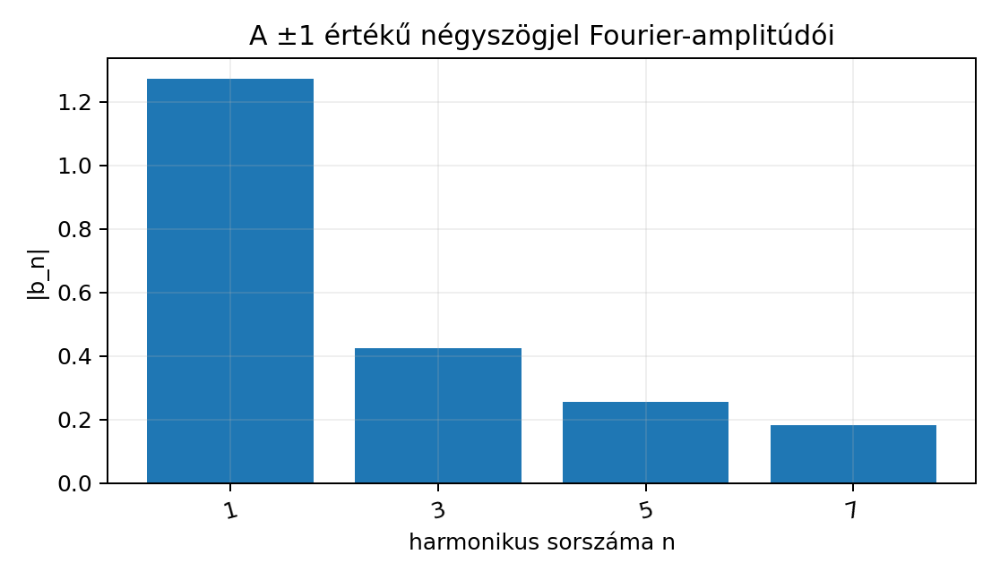

Egy digitális áramkör órajele négyszögjel: a feszültség 0 V és 5 V
között váltakozik, másodpercenként egymillió teljes periódussal (1 MHz).
Ha ezt a jelet spektrumanalizátorral vizsgáljuk, nemcsak az
alapfrekvenciánál látunk komponenst, hanem annak páratlan
többszöröseinél is, csökkenő amplitúdóval. A kérdés az, hogyan
számíthatjuk ki ezeket az amplitúdókat pontosan, és miért éppen azok a
frekvenciák jelennek meg.
Hasonló kérdés merül fel hangszerek hangjánál, hővezetési
feladatokban vagy rezgő húrok vizsgálatánál: egy periodikus jelet tiszta
szinusz- és koszinusz-rezgések összegére bontunk. Az előző alfejezetben
Periodikus jelek, trigonometrikus polinomok és
ortogonalitás láttuk, hogy a
és
függvények ortogonális rendszert alkotnak. Most arra használjuk ezt az
ortogonalitást, hogy egy adott
függvényhez megtaláljuk azt a trigonometrikus sort, amelynek együtthatói
a lehető „legjobban” illeszkednek a jelhez.
20.2.2 Szemléletes kép
A négyszögjel Fourier-együtthatói azonnal mutatják, hogy a jel nem
egyetlen frekvenciát, hanem diszkrét harmonikusok sorozatát
tartalmazza:

A ±1 értékű négyszögjel
Fourier-amplitúdói - A 2π periódusú, ±1 értékű négyszögjel b_n = 4/(nπ),
ha n páratlan; 4/π ≈ 1,2732, 4/(3π) ≈ 0,4244, 4/(5π) ≈ 0,2546, 4/(7π) ≈
0,1819. Páros n-re b_n = 0.
Az ábra azt mutatja, hogy az amplitúdók
szerint csökkennek. Ez a lassú csökkenés annak a következménye, hogy a
négyszögjelnek ugrásai vannak. A simább jelek együtthatói gyorsabban
csökkennek, amint azt hamarosan a háromszögjel példáján látni
fogjuk.
20.2.3 Definíciók: valós és komplex
Fourier-együtthatók
A továbbiakban
olyan
szerint periodikus függvény, amely a
intervallumon Riemann-integrálható (a gyakorlatban legtöbbször
szakaszonként folytonos).
Definíció. Az
függvény valós Fourier-sora (Fourier series):
ahol a Fourier-együtthatók (Fourier coefficients):
A
jelölés nem állít pontonkénti egyenlőséget; azt jelenti, hogy a jobb
oldali sor az
függvény Fourier-sora. Azt, hogy a sor mely pontokban és milyen
értelemben állítja elő
-et,
a A Fourier-sor konvergenciája és a
Gibbs-jelenség alfejezet vizsgálja.
A komplex alak (complex form) tömörebb. Az Euler-formula szerint
és
kifejezhető az
és
függvényekkel. Ezért a Fourier-sor így is írható:
20.2.4 Kapcsolat a valós és a
komplex együtthatók között
A kapcsolat levezetése az Euler-formulából indul. Legyen
.
A komplex alakban a pozitív és negatív indexű tagokat párba
állítjuk:
Ha a valós alakban az
-edik
tag
,
akkor a két kifejezés egyenlőségéből:
Ezt megfordítva kapjuk a gyakorlatban használt átváltóképleteket.
Állítás. Valós
esetén tetszőleges
-re
Bizonyítás. A
definíciójába behelyettesítjük az Euler-formulát:
A
esetén
,
ezért az
előjele megfordul, és
.
Végül
-ra
.
∎
Ha
valós, akkor
és
valósak, így az állításból rögtön látszik, hogy
.
Ez a szimmetria hasznos ellenőrzés: ha a számolt
-ek
nem így viselkednek, számolási hibát vétettünk.
20.2.5 Páros és páratlan
függvények, koszinusz- és szinuszsorok
Sok gyakorlati jel rendelkezik szimmetriával, és ez a
Fourier-együtthatók felét azonnal nullává teszi.
Definíció. Az
függvény páros (even), ha minden értelmezési pontjára
;
páratlan (odd), ha
.
A szimmetrikus intervallumon vett integrálokra érvényes:
Mivel
páros,
páratlan, továbbá páros
páros
páros, páratlan
páratlan
páros, páros
páratlan
páratlan, azonnal adódik a következő.
Következmény. - Ha
páros, akkor
minden
-re,
tehát a Fourier-sor tisztán koszinuszos:
Ha
páratlan, akkor
minden
-ra,
tehát a Fourier-sor tisztán szinuszos:
Ha a függvény csak a
intervallumon ismert, két természetes kiterjesztést használhatunk. A
páros kiterjesztés (even extension,
)
a grafikont az
tengelyre tükrözi, és koszinuszsort ad; a páratlan kiterjesztés (odd
extension,
,
)
a grafikont az origóra tükrözi, és szinuszsort ad.
a szakadási pontokban pedig
.
A függvény páratlan, ezért
minden
-ra.
A szinusz-együtthatók:
Ha
páros, akkor
,
ha
páratlan, akkor
.
Ezért
A Fourier-sor tehát,
jelöléssel:
A komplex együtthatók a
indexű páratlan számokra:
a páros indexűek pedig nullák.
20.2.6.2 Fűrészjel (sawtooth
wave)
Legyen
a
intervallumon, és terjesszük ki
szerint periodikusan. A függvény páratlan, ezért
.
A szinusz-együtthatók:
Parciális integrálással,
,
választással:
A
tag a
és
határokon eltűnik, ezért
Így
A fűrészjel Fourier-sora:
Ellenőrzésképpen: a sor együtthatói
szerint csökkennek, ami összhangban van azzal, hogy a fűrészjelnek
ugrása van a periódushatáron.
20.2.6.3 Háromszögjel: az
függvény
Legyen
a
intervallumon, periodikusan kiterjesztve. Ez a függvény páros, ezért
.
A koszinusz-együtthatók:
Továbbá
-re
Parciális integrálással,
,
:
A
tag a határokon eltűnik, tehát
Így
Páros
-re
ez nulla, páratlan
-re
pedig
,
tehát
Az
Fourier-sora:
Ellenőrzés: az
pontban a sor összege
.
A páratlan négyzetszámok reciprokainak összege
,
ezért a kifejezés
,
ami valóban
.
Ráadásul a háromszögjel folytonos, és az együtthatói
szerint csökkennek, tehát gyorsabban, mint a szakadásos jeleknél.
20.2.7 Általánosítás
periódusra
A valóságban a jelek ritkán
periódusúak. Legyen
periódusú függvény. Az
helyettesítéssel a
intervallumot a
intervallumra képezzük le: ha
,
akkor
.
A láncszabály szerint
,
tehát a
-s
képletek átírhatók.
Definíció. Ha
periódusú és integrálható
-en,
akkor a Fourier-sora:
ahol
A komplex alak:
A páros/páratlan egyszerűsítések itt is érvényesek: páros függvényre
és
,
páratlanra
és
.
Példa (2L periódusú négyszögjel). Legyen
,
ha
,
és
,
ha
.
A függvény páratlan, ezért
,
és
Így a sor:
Ez pontosan a
-s
négyszögjel általánosítása: az
választással visszakapjuk a korábbi formulát.
20.2.8 Együtthatók csökkenési
sebessége és a simaság
A példákban feltűnt, hogy a szakadásos négyszög- és fűrészjel
együtthatói
szerint, a folytonos, de törött háromszögjelé
szerint csökkennek. Ez nem véletlen, hanem a Fourier-együtthatók
parciális integrálással igazolható általános tulajdonsága.
Tegyük fel, hogy
-periodikusan
folytonos (azaz
),
szakaszonként folytonosan differenciálható, és
Fourier-együtthatói
.
Ekkor parciális integrálással:
A periódusosság miatt a kiintegrált rész nulla, tehát
Hasonlóan kapjuk, hogy
Mivel
korlátos, azonnal következik, hogy
(a A Fourier-sor konvergenciája és a
Gibbs-jelenség alfejezetben kimondott Riemann–Lebesgue-lemmából még
is). Ha
is (periodikusan) folytonos és szakaszonként folytonosan
differenciálható, akkor az eljárást megismételve
csökkenést kapunk. Általában: ha
folytonos (2π-periodikusan) és
szakaszonként folytonosan differenciálható, akkor a Fourier-együtthatók
nagyságrendűek.
Továbbvitt eredmény. Ez a csökkenési sebesség a A Fourier-sor konvergenciája és a Gibbs-jelenség
alfejezetben meghatározza, hogy a részletösszegek milyen gyorsan
közelítenek, és hogy a szakadásnál fellép-e Gibbs-féle túllövés. A
simább jel gyorsabban csökkenő spektruma azt is jelenti, hogy a jel
energiája kevesebb magas frekvenciás harmonikusban koncentrálódik, amit
a Parseval-egyenlőség és a Fourier-sorok
alkalmazásai alfejezetben számszerűsítünk.
Periódus azonosítása. Ha a függvény
periódusú, használd a
-es
képleteket; ha nincs külön jelzés, a
-s
képletekből indulsz.
Szimmetria ellenőrzése. Ha
páros, akkor
,
és elég az
integrálokat a félintervallumon számolni. Ha
páratlan, akkor
,
és elég a
integrálokat számolni.
Együtthatók kiszámítása. A nem nulla együtthatókat
parciális integrálással, helyettesítéssel vagy táblázatos integrállal
határozd meg. Figyelj a
típusú kifejezésekre.
Komplex alak előállítása. Ha komplex sorra van
szükség, használd a
átváltást, vagy számold ki közvetlenül a
integrált.
Ellenőrzés. Helyettesíts be egy folytonossági
pontot, ahol ismered
értékét; ellenőrizd, hogy az együtthatók csökkenése megfelel-e a
függvény simaságának. Ha
valós, akkor
-nek
teljesülnie kell.
20.2.10 Valós életbeli alkalmazás:
digitális órajel spektruma
Legyen egy digitális áramkör órajele ideális négyszögjel:
és
között váltakozik, frekvenciája
.
A jel periódusideje
.
A jel két részből áll: egy
egyenáramú (DC) komponensből és egy
amplitúdójú négyszöghullámból. A
periódusú négyszögjel képlete szerint, ha a periódus
,
akkor
.
A
amplitúdójú négyszögjel Fourier-sora:
Így a teljes órajel:
A spektrum tehát a következő komponenseket tartalmazza:
DC komponens:
.
Alapharmonikus,
:
csúcsérték
.
3. harmonikus,
:
csúcsérték
.
5. harmonikus,
:
csúcsérték
.
A mérnöki gyakorlatban ez azért fontos, mert az órajel gyors
átkapcsolásai magas frekvenciás harmonikusokat keltenek. Ezek a
harmonikusok a nyomtatott áramköri vezetősávokon antennaként
sugározhatnak, és elektromágneses interferenciát (EMI) okozhatnak. Az
ideális modell szerint az
-edik
páratlan harmonikus amplitúdója
V, tehát a csökkenés
ütemű. A valóságban azonban az órajelnek véges a felfutási ideje, és
emiatt a magas frekvenciás harmonikusok gyorsabban csökkennek, mint az
ideális négyszögjelnél; ezért az EMI-tervezésben a felfutási idő
növelése az egyik bevált csökkentési stratégia. A
/
értékek itt szemléltető, kerekített modellparaméterek, nem konkrét
mérési adatok.
A következő kód a négyszögjel Fourier-sorának részletösszegeit
rajzolja ki. Ez szemléltetés, nem bizonyítás; a numerikus hibaforrás a
véges összegzésből és a diszkretizációból adódik.
import numpy as npimport matplotlib.pyplot as pltx = np.linspace(-np.pi, np.pi, 2000)def square(x):# 2π szerint periodikus, ±1 értékű négyszögjel; szakadásnál 0return np.where((x >0) & (x < np.pi), 1.0, np.where((x >-np.pi) & (x <0), -1.0, 0.0))def partial_square(x, N): S = np.zeros_like(x)for k inrange(N): n =2* k +1 S += np.sin(n * x) / nreturn4/ np.pi * Splt.plot(x, square(x), 'k--', linewidth=1.5, label='négyszögjel')for N, color inzip([1, 5, 20], ['tab:blue', 'tab:orange', 'tab:green']): plt.plot(x, partial_square(x, N), label=f'N={N} részletösszeg', color=color)plt.xlabel('x')plt.ylabel('f(x)')plt.title('A négyszögjel Fourier-részletösszegei')plt.legend()plt.grid(True)plt.show()
Várt kimenet: az ábrán a szaggatott fekete görbe a négyszögjel. Az N=1 részletösszeg egyetlen szinuszhullám, N=5 már követi a jel alakját, N=20 pedig az ugrások környékét kivéve jól közelít. Az ugrásoknál megmaradó túllövés a Gibbs-jelenség, amelyet a következő alfejezet tárgyal.
A kódban a np.sin radiánban számol, a np.pi
a
értékét adja meg; ez összhangban van a könyv jelölési
konvenciójával.
Az alábbi ábra a kód kimenetét kiterjeszti a fejezet mindhárom
nevezetes jelére. Itt
az
harmonikusok összege (a kódban
a páratlan tagok száma). A négyszögjel és a fűrészjel együtthatói
,
az
együtthatói
szerint csökkennek; ennek megfelelően az
részletösszegei már
-nél
is jól közelítenek, a négyszögjelé az ugrásnál nem.
Statikus változat (mint a PDF-ben)
Részletösszegek és együtthatócsökkenés: soronként a
négyszögjel, a fűrészjel és az
,
bal oldalt
és
a jellel, jobb oldalt az együtthatók log–log skálán az
és
referenciaegyenessel
20.2.12 Tipikus hibák
Az
és az
keverése. A Fourier-sor konstans tagja
,
nem
.
Ha például az
függvénynél
,
akkor a konstans tag
.
Aki
-t
ír, kétszeres DC-komponenst kap.
A páros/páratlan besorolás tévesztése. Például az
függvény páros
páratlan
páratlan, ezért integrálja
-n
nulla. Ha valaki ezt párosnak nézi, hibásan számol nem nulla
együtthatót.
A
periódusnál a
-s
képletek használata. A
periódusú jel argumentumában
áll, és az együtthatóknál
szorzó szerepel. A
-s
formula csak az
speciális eset.
A komplex átváltás előjele. A helyes kapcsolat
,
nem pedig
.
A hibás előjel a komplex és valós sor összehasonlításakor azonnal
látszik.
A sor pontonkénti konvergenciájának automatikus
feltételezése. A
jelölés nem jelenti azt, hogy a sor minden pontban
-hez
tart. Szakadási pontban a részletösszegek határértéke a bal és jobb
oldali határérték átlaga, amint azt a A Fourier-sor
konvergenciája és a Gibbs-jelenség alfejezetben pontosítjuk.
20.2.13 Önellenőrzés
Igaz-e, hogy ha
páros, akkor a Fourier-sorában minden
?
Egy
periódusú jel Fourier-sorában a tagok
vagy
alakúak?
Igaz-e, hogy a
értékű négyszögjel minden
-re
?
Ha
folytonos, de
ugrik, akkor a Fourier-együtthatók körülbelül milyen gyorsan
csökkennek?
Valós
esetén igaz-e, hogy
?
20.2.14 Feladatok
1. feladat (A) Számítsd ki az
,
,
szerint periodikus függvény valós Fourier-sorát.
2. feladat (A) Legyen
a
intervallumon,
szerint periodikusan kiterjesztve. Add meg a Fourier-sort.
3. feladat (B) Add meg a fűrészjel
(,
,
szerint periodikus) komplex Fourier-együtthatóit
-t,
és ellenőrizd a valós együtthatókkal való kapcsolatot.
4. feladat (B) Legyen
a
intervallumon. Írd fel a páros kiterjesztéshez tartozó koszinuszsort és
a páratlan kiterjesztéshez tartozó szinuszsort.
5. feladat (C) Bizonyítsd be: ha
páros és integrálható
-n,
akkor
minden
-re;
ha
páratlan, akkor
minden
-ra.
6. feladat (D) Egy egyenirányított hálózati
feszültség ideális modellje
,
ahol
és
.
Határozd meg a Fourier-sor első néhány együtthatóját, és értelmezd a
DC-komponenst és a 100 Hz-es harmonikust. (A modell nem tartalmaz
diódaveszteséget, szűrést vagy hálózati torzítást.)
20.2.15 Megoldások
20.2.15.1 Önellenőrzés –
válaszok
Igaz: a szimmetrikus intervallumon a páros függvény
-szel
vett szorzata páratlan, integrálja nulla.
alakúak; a
periódus az
speciális eset.
Nem: csak páratlan
-re
igaz, páros
-re
.
szerint csökkennek, mert egy parciális integrálás
javulást ad.
Igaz, mert
,
ha
valósak.
20.2.15.2 1. feladat megoldása
Az
függvény páros, tehát
.
A koszinusz-együtthatók:
-re:
Kétszeres parciális integrálással:
A
tagok a
és
határokon eltűnnek, ezért
Így
A Fourier-sor:
Ellenőrzés: az
pontban a jobb oldal
,
ami megegyezik
-tel.
20.2.15.3 2. feladat megoldása
Az
függvény páratlan, ezért
.
A szinusz-együtthatók:
Az
helyettesítéssel
,
,
így
Parciális integrálással
.
A
tag a határokon nulla, így
Ezért
A Fourier-sor:
Az
esetén visszakapjuk a fűrészjel korábbi sorát.
20.2.15.4 3. feladat megoldása
A komplex együttható definíció szerint:
A
primitív függvényt használva:
Mivel
,
a kiértékelés:
Így
és
,
mert
.
Ellenőrzés a valós kapcsolattal: a fűrészjelnél
és
,
ezért
,
ami megegyezik.
20.2.15.5 4. feladat megoldása
Páros kiterjesztés. A koszinusz-együtthatók
-vel
a
-s
képletekből, a félintervallumon:
Tehát páros
-re
,
páratlan
-re
.
A koszinuszsor:
Páratlan kiterjesztés. A szinusz-együtthatók:
A szinuszsor:
Ez utóbbi a fűrészjel sora, amely a
intervallumon valóban
-et
ad.
20.2.15.6 5. feladat megoldása
Legyen
páros. Ekkor
páros
páratlan
páratlan függvény, tehát a szimmetrikus intervallumon vett integrálja
nulla:
Ha
páratlan, akkor
páratlan
páros
páratlan, így minden
-ra
Ezzel az állítást beláttuk. ∎
20.2.15.7 6. feladat megoldása
Az
jel periódusa
,
alapfrekvenciája
.
A
-s
sorából indulunk ki. Az
páros, periódusa
,
ezért
,
és
.
Itt
-re
az integrandus
,
az integrál
;
-re
tehát páratlan
-re
,
páros
-re
,
és
.
Így a
-s
koszinuszos sorban csak a
tagok szerepelnek
(
helyett lentebb
-et
írunk):
Ez a
periódusú sor az
-ben
a
-es
alapfrekvenciához igazodik:
választással az
-edik
tag frekvenciája
.
Így
A DC-komponens:
Az
tag a
-es
harmonikus, csúcsértéke:
A
-es
()
tag csúcsértéke
,
a
-esé
.
A DC-komponens az egyenirányított jel átlagértéke, amelyet a terhelés
egyenáramú oldala hasznosít; a
-es
és magasabb harmonikusok a szűrőkondenzátor méretezésénél fontosak. A
modell korlátja, hogy ideális diódákat és tiszta szinuszos hálózatot
feltételez.
20.2.16 Rövid összefoglaló
A
periódusú integrálható
függvény valós Fourier-sora: